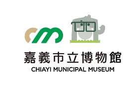
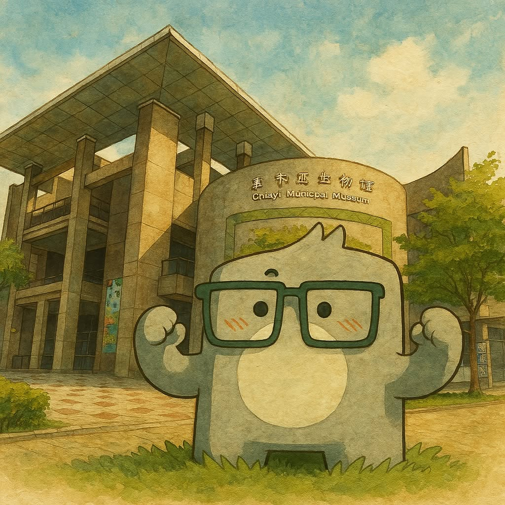

桃喜的百味手帳
跟著小嘉博，在桃城百味找回桃喜帶走的嘉義生活小知識。
小嘉博的任務說明

小嘉博
小嘉博
1 / 5
點擊「下一句」聽小嘉博繼續說明任務。
小嘉博
點擊「下一句」，聽聽這一區的追蹤線索。
Quest Map
桃喜的百味手帳
📍 已找回 0 / 5 頁《百味手帳》
🗺️ 地圖線索
請將鏡頭對準桃喜圖像

Web AR Demo：本頁會嘗試開啟手機相機；若瀏覽器未允許或以 file:// 開啟，會改用展場照片模擬掃描。正式版會將此模組替換為圖像辨識式 Web AR。

百味
手帳
手帳
獲得《百味手帳》頁面
百味手帳頁面

百味手帳補完！
五區的嘉義生活小祕密都找回來了。你已完成桃城百味實境遊戲 Demo。
STAMPS
桃城百味集點頁
0/ 5 章
集滿五章可兌換
完成五個展區任務後，可憑集點頁至服務台兌換紀念小禮。此頁為 Demo 的獎勵兌換參考。
尚未集滿五章
集滿
集滿
恭喜完成集點！
你已找回五區的嘉義生活故事，獲得一次獎勵兌換資格。
獎勵兌換參考
可兌換：桃城百味紀念明信片一張，或嘉義在地風味小禮一份。
正式活動請依現場公告與服務台實際供應內容為準。
兌換資格已解鎖